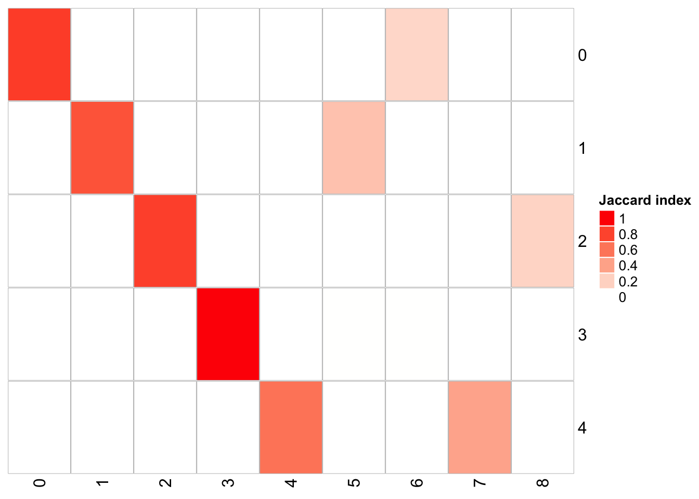
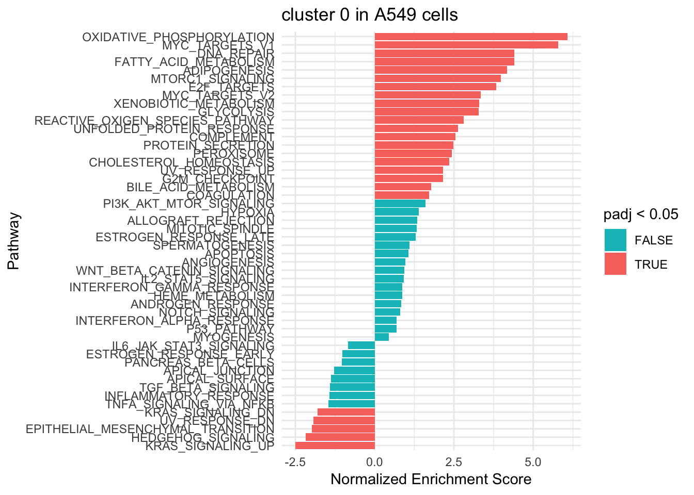

mixture control dataset
Last updated: 2020-03-23
Checks: 7 0
Knit directory: EvaluateSingleCellClustering/
This reproducible R Markdown analysis was created with workflowr (version 1.4.0). The Checks tab describes the reproducibility checks that were applied when the results were created. The Past versions tab lists the development history.
Great! Since the R Markdown file has been committed to the Git repository, you know the exact version of the code that produced these results.
Great job! The global environment was empty. Objects defined in the global environment can affect the analysis in your R Markdown file in unknown ways. For reproduciblity it’s best to always run the code in an empty environment.
The command set.seed(20200322) was run prior to running the code in the R Markdown file. Setting a seed ensures that any results that rely on randomness, e.g. subsampling or permutations, are reproducible.
Great job! Recording the operating system, R version, and package versions is critical for reproducibility.
Nice! There were no cached chunks for this analysis, so you can be confident that you successfully produced the results during this run.
Great job! Using relative paths to the files within your workflowr project makes it easier to run your code on other machines.
Great! You are using Git for version control. Tracking code development and connecting the code version to the results is critical for reproducibility. The version displayed above was the version of the Git repository at the time these results were generated.
Note that you need to be careful to ensure that all relevant files for the analysis have been committed to Git prior to generating the results (you can use wflow_publish or wflow_git_commit). workflowr only checks the R Markdown file, but you know if there are other scripts or data files that it depends on. Below is the status of the Git repository when the results were generated:
Ignored files:
Ignored: .Rproj.user/
Ignored: data/simulated_data/
Untracked files:
Untracked: data/%
Untracked: data/allen_mouse_brain/
Untracked: data/intermediate_data/
Untracked: data/pbmc/
Untracked: data/pbmc_5k_v3.rds
Untracked: data/pbmc_5k_v3_label_transfered_from_10k.rds
Untracked: data/sc_mixology/
Untracked: docs/figure/
Unstaged changes:
Modified: analysis/_site.yml
Modified: analysis/index.Rmd
Note that any generated files, e.g. HTML, png, CSS, etc., are not included in this status report because it is ok for generated content to have uncommitted changes.
There are no past versions. Publish this analysis with wflow_publish() to start tracking its development.
mixture control dataset
To demonstrate the utility of the R package, we run the Snakemake pipeline on a single-cell RNAseq dataset which contains cells from 5 cancer cell lines mixed together: A549, H1975, H2228, H838 and HCC827 (Tian et al. 2019). We tested the combination of 6 different k.param (10,20,30,60,80,100), 7 different resolutions (0.001,0.005,0.01,0.05,0.1,0.2,0.3) and 5 different number of PCs (3,5,7,10,15) to retain after dimension reduction resulting in a total of 210 different parameter sets.
To follow the analysis, you can download the data at osf.io
library(scclusteval)
library(tidyverse)
library(patchwork)
library(Seurat)
# read in the seurat object
sc_10x_5cl_seurat<- readRDS("data/sc_mixology/sc_10x_5cl_seruat.rds")
subsample_idents<- readRDS("data/sc_mixology/gather_subsample.rds")
fullsample_idents<- readRDS("data/sc_mixology/gather_full_sample.rds")explore full dataset
## how many PCs to include
ElbowPlot(sc_10x_5cl_seurat)# a tibble with a list column
fullsample_idents# A tibble: 210 x 4
pc resolution k_param original_ident_full
<chr> <chr> <chr> <list>
1 3 0.001 10 <fct [3,918]>
2 5 0.001 10 <fct [3,918]>
3 7 0.001 10 <fct [3,918]>
4 10 0.001 10 <fct [3,918]>
5 15 0.001 10 <fct [3,918]>
6 3 0.005 10 <fct [3,918]>
7 5 0.005 10 <fct [3,918]>
8 7 0.005 10 <fct [3,918]>
9 10 0.005 10 <fct [3,918]>
10 15 0.005 10 <fct [3,918]>
# … with 200 more rows# what's the relationship of clusters between resolution 0.05, 0.1 and 0.3 with the same and k_param
fullsample_idents %>% mutate(id = row_number()) %>%
filter(pc == 15, resolution == 0.05, k_param == 20)# A tibble: 1 x 5
pc resolution k_param original_ident_full id
<chr> <chr> <chr> <list> <int>
1 15 0.05 20 <fct [3,918]> 55fullsample_idents %>% mutate(id = row_number()) %>%
filter(pc == 15, resolution == 0.1, k_param == 20)# A tibble: 1 x 5
pc resolution k_param original_ident_full id
<chr> <chr> <chr> <list> <int>
1 15 0.1 20 <fct [3,918]> 60fullsample_idents %>% mutate(id = row_number()) %>%
filter(pc == 15, resolution == 0.3, k_param == 20)# A tibble: 1 x 5
pc resolution k_param original_ident_full id
<chr> <chr> <chr> <list> <int>
1 15 0.3 20 <fct [3,918]> 70## x-axis is resolution of 0.1, and y-axis is resolution of 0.05
PairWiseJaccardSetsHeatmap(fullsample_idents$original_ident_full[[55]],
fullsample_idents$original_ident_full[[60]],
show_row_dend = F, show_column_dend = F,
cluster_row = F, cluster_column =F) cluster 4 split into cluster 4 and cluster 6 cluster 0 split into cluster 0 and 5
cluster 4 split into cluster 4 and cluster 6 cluster 0 split into cluster 0 and 5
## x-axis is resolution of 0.3, and y-axis is resolution of 0.05
PairWiseJaccardSetsHeatmap(fullsample_idents$original_ident_full[[55]],
fullsample_idents$original_ident_full[[70]],
show_row_dend = F, show_column_dend = F,
cluster_row = F, cluster_column =F) cluster 4 split into cluster 4,7 cluster 2 split into cluster 2,8 cluster 1 split into cluster 1,5
## x-axis is resolution of 0.3, and y-axis is resolution of 0.1
PairWiseJaccardSetsHeatmap(fullsample_idents$original_ident_full[[60]],
fullsample_idents$original_ident_full[[70]],
show_row_dend = F, show_column_dend = F,
cluster_row = F, cluster_column =F)We see as we increase the resolution, the number of clusters increase.
Let’s check how the clusters are splitting when we increase the resolution.
## PC= 15, k.param = 20, resolution = 0.05
sc_10x_5cl_seurat<-
FindNeighbors(sc_10x_5cl_seurat, dims = 1:15, k.param = 20) %>%
FindClusters(resolution = 0.05)Modularity Optimizer version 1.3.0 by Ludo Waltman and Nees Jan van Eck
Number of nodes: 3918
Number of edges: 125427
Running Louvain algorithm...
Maximum modularity in 10 random starts: 0.9883
Number of communities: 5
Elapsed time: 0 secondssc_10x_5cl_seurat<-
FindNeighbors(sc_10x_5cl_seurat, dims = 1:15, k.param = 20) %>%
FindClusters(resolution = 0.1)Modularity Optimizer version 1.3.0 by Ludo Waltman and Nees Jan van Eck
Number of nodes: 3918
Number of edges: 125427
Running Louvain algorithm...
Maximum modularity in 10 random starts: 0.9777
Number of communities: 7
Elapsed time: 0 secondssc_10x_5cl_seurat<-
FindNeighbors(sc_10x_5cl_seurat, dims = 1:15, k.param = 20) %>%
FindClusters(resolution = 0.3) Modularity Optimizer version 1.3.0 by Ludo Waltman and Nees Jan van Eck
Number of nodes: 3918
Number of edges: 125427
Running Louvain algorithm...
Maximum modularity in 10 random starts: 0.9440
Number of communities: 9
Elapsed time: 0 secondsp1<- DimPlot(sc_10x_5cl_seurat, reduction = "umap", label = TRUE, group.by = "RNA_snn_res.0.05") + ggtitle("res 0.05")
p2<- DimPlot(sc_10x_5cl_seurat, reduction = "umap", label = TRUE, group.by = "RNA_snn_res.0.1") + ggtitle("res 0.1")
p3<- DimPlot(sc_10x_5cl_seurat, reduction = "umap", label = TRUE, group.by = "RNA_snn_res.0.3") + ggtitle("res 0.3")
p4<- DimPlot(sc_10x_5cl_seurat, reduction = "umap", group.by = "cell_line", label = TRUE)
p1 + p2 + p3 + p4Some other visualizations
## cluster number for each set of parameter
purrr::map_dbl(fullsample_idents$original_ident_full, function(x) length(unique(x))) [1] 3 5 4 4 4 4 5 5 5 5 4 5 5 5 5 5 5 5 5 6 5 6 7
[24] 6 8 8 8 11 9 10 12 10 13 13 12 2 3 3 3 3 3 4 4 4 4 4
[47] 5 5 5 5 4 5 5 5 5 5 5 5 5 7 5 7 7 7 8 6 8 9 9
[70] 9 2 3 2 4 4 4 5 5 5 5 4 5 5 5 5 4 5 5 5 5 5 5
[93] 5 5 5 5 5 7 7 7 5 8 7 7 9 2 3 3 4 4 4 5 5 5 5
[116] 4 5 5 5 5 4 5 5 5 5 4 5 5 5 5 5 5 6 5 5 5 6 6
[139] 7 7 2 3 3 3 3 4 5 5 5 5 4 5 5 5 5 4 5 5 5 5 4
[162] 5 5 5 5 5 5 5 5 5 5 5 6 5 5 2 3 3 3 3 4 5 5 5
[185] 5 4 5 5 5 5 4 5 5 5 5 4 5 5 5 5 5 5 5 5 5 5 5
[208] 6 5 5## how many cells identity change from one cluster to another
ClusterIdentityChordPlot(fullsample_idents$original_ident_full[[55]],
fullsample_idents$original_ident_full[[60]])
## cluster size plot
ClusterSizeBarplot(fullsample_idents$original_ident_full[[55]]) +
theme_classic()## change idents to cluster id when resolution is 0.1
Idents(sc_10x_5cl_seurat)<- sc_10x_5cl_seurat@meta.data$RNA_snn_res.0.1
CalculateSilhouette(sc_10x_5cl_seurat, dims = 1:15) %>% head()# A tibble: 6 x 3
cluster width cell
<fct> <dbl> <chr>
1 3 0.461 Lib90_00000
2 3 0.471 Lib90_00001
3 1 0.464 Lib90_00002
4 3 0.585 Lib90_00003
5 3 0.531 Lib90_00004
6 3 0.355 Lib90_00005silhouette_scores<- CalculateSilhouette(sc_10x_5cl_seurat, dims = 1:15)
sil_p1<- SilhouetteRainCloudPlot(silhouette_scores)
## check silhouette score with resolution 0.05
Idents(sc_10x_5cl_seurat)<- sc_10x_5cl_seurat@meta.data$RNA_snn_res.0.05
silhouette_scores<- CalculateSilhouette(sc_10x_5cl_seurat, dims = 1:15)
sil_p2<- SilhouetteRainCloudPlot(silhouette_scores)
sil_p1 + sil_p2
From the jaccard heatmap we know that: cluster 4 split (res = 0.05) into cluster 4 and cluster 6 (res = 0.1) cluster 0 split (res = 0.05) into cluster 0 and 5 (res = 0.1)
cluster 0 and cluster 5 have on average smaller silhouette score than the original cluster 0, suggesting that it is not a good idea to split A549 cells.
cluster 4 and 6 seems to have a higher silhouette score than the orignal cluster 4, suggesting that H1975 cells can be future split into two subclusters. From the UMAP plot, it does suggest cluster 4 and 6 are seperated.
explore the subsampled data
# a tibble with two list columns, note that the ident number is 80% of the full dataset
subsample_idents# A tibble: 21,000 x 6
pc resolution k_param original_ident recluster_ident round
<chr> <chr> <chr> <list> <list> <chr>
1 3 0.001 10 <fct [3,134]> <fct [3,134]> 0
2 3 0.001 10 <fct [3,134]> <fct [3,134]> 1
3 3 0.001 10 <fct [3,134]> <fct [3,134]> 2
4 3 0.001 10 <fct [3,134]> <fct [3,134]> 3
5 3 0.001 10 <fct [3,134]> <fct [3,134]> 4
6 3 0.001 10 <fct [3,134]> <fct [3,134]> 5
7 3 0.001 10 <fct [3,134]> <fct [3,134]> 6
8 3 0.001 10 <fct [3,134]> <fct [3,134]> 7
9 3 0.001 10 <fct [3,134]> <fct [3,134]> 8
10 3 0.001 10 <fct [3,134]> <fct [3,134]> 9
# … with 20,990 more rows## check for one of the subsample experiment, the cell identities
## should be the same before and after clustering, but the cluster identities
## should be different
subsample_idents %>% mutate(id = row_number()) %>%
filter(pc == 15, resolution == 0.05, k_param == 20)# A tibble: 100 x 7
pc resolution k_param original_ident recluster_ident round id
<chr> <chr> <chr> <list> <list> <chr> <int>
1 15 0.05 20 <fct [3,134]> <fct [3,134]> 0 5401
2 15 0.05 20 <fct [3,134]> <fct [3,134]> 1 5402
3 15 0.05 20 <fct [3,134]> <fct [3,134]> 2 5403
4 15 0.05 20 <fct [3,134]> <fct [3,134]> 3 5404
5 15 0.05 20 <fct [3,134]> <fct [3,134]> 4 5405
6 15 0.05 20 <fct [3,134]> <fct [3,134]> 5 5406
7 15 0.05 20 <fct [3,134]> <fct [3,134]> 6 5407
8 15 0.05 20 <fct [3,134]> <fct [3,134]> 7 5408
9 15 0.05 20 <fct [3,134]> <fct [3,134]> 8 5409
10 15 0.05 20 <fct [3,134]> <fct [3,134]> 9 5410
# … with 90 more rowsidentical(names(subsample_idents$original_ident[[5401]]), names(subsample_idents$recluster_ident[[5401]]))[1] TRUEtable(subsample_idents$original_ident[[5401]])
0 1 2 3 4
1003 715 609 460 347 table(subsample_idents$recluster_ident[[5401]])
0 1 2 3 4
1003 719 609 457 346 Jaccard Raincloud plot for different resolutions
subsample_idents_list<- subsample_idents %>%
group_by(pc, resolution, k_param) %>%
nest()
subsample_idents_list %>% ungroup() %>% mutate(id = row_number()) %>%
filter(pc == 15, resolution == 0.05, k_param == 20)# A tibble: 1 x 5
pc resolution k_param data id
<chr> <chr> <chr> <list> <int>
1 15 0.05 20 <tibble [100 × 3]> 55subsample_idents_list$data[[55]]# A tibble: 100 x 3
original_ident recluster_ident round
<list> <list> <chr>
1 <fct [3,134]> <fct [3,134]> 0
2 <fct [3,134]> <fct [3,134]> 1
3 <fct [3,134]> <fct [3,134]> 2
4 <fct [3,134]> <fct [3,134]> 3
5 <fct [3,134]> <fct [3,134]> 4
6 <fct [3,134]> <fct [3,134]> 5
7 <fct [3,134]> <fct [3,134]> 6
8 <fct [3,134]> <fct [3,134]> 7
9 <fct [3,134]> <fct [3,134]> 8
10 <fct [3,134]> <fct [3,134]> 9
# … with 90 more rows## for the n times repeating, matching the clusters before and after reclustering
## and assign the jaccard for that cluster
AssignHighestJaccard(subsample_idents_list$data[[55]]$original_ident,
subsample_idents_list$data[[55]]$recluster_ident)# A tibble: 100 x 5
`0` `1` `2` `3` `4`
<dbl> <dbl> <dbl> <dbl> <dbl>
1 0.998 0.994 1 0.993 0.997
2 1 0.999 1 0.998 1
3 0.999 1 1 0.998 1
4 0.997 0.994 1 0.989 1
5 0.998 0.997 1 0.996 1
6 0.999 0.999 1 1 1
7 0.999 1 1 0.998 1
8 0.998 0.997 1 0.992 1
9 0.999 1 1 0.998 1
10 0.999 1 1 0.998 1
# … with 90 more rowsJaccardRainCloudPlot(subsample_idents_list$data[[55]]$original_ident,
subsample_idents_list$data[[55]]$recluster_ident) +
geom_hline(yintercept = c(0.6, 0.75), linetype = 2) +
xlab("cluster id w/ k=20 res=0.1 pc=15") 
with resolution of 0.05, Seurat finds 5 clusters which is optimal given that 5 cancer cell lines were mixed together. The jaccard indices are close to 1 for all clusters after subsampling and reclustering suggesting all 5 clusters are quite stable.
make a Raincloud plot for every combination of the parameters.
subsample_idents_list2<- subsample_idents_list %>%
mutate(plot = map(data, ~JaccardRainCloudPlot(.x$original_ident, .x$recluster_ident) + geom_hline(yintercept = c(0.6, 0.75), linetype = 2)))
p1<- subsample_idents_list2 %>%
filter(resolution == 0.05, pc == 15, k_param ==20) %>%
pull(plot) %>% `[[`(1) + ggtitle("resolution = 0.05, pc = 15, k.param = 20")
p2<- subsample_idents_list2 %>%
filter(resolution == 0.1, pc == 15, k_param ==20) %>%
pull(plot) %>% `[[`(1) + ggtitle("resolution = 0.1, pc = 15, k.param = 20")
p1/ p2## to save to disk, give a name for each pdf
## subsample_idents_list2<- mutate(subsample_idents_list2, file_name =
## paste0("PC_",pc, "_", ## "resolution_",resolution, "_", "k_", k_param, ".pdf"))
# save to disk
#walk2(subsample_idents_list2$file_name, subsample_idents_list2$plot, ggsave, width = 10, height = 6.5)From the Jaccard raincloud plot, cluster 0,5 (res = 0.1) have dropped jaccard similarity index. cluster 4,6 (res = 0.1) also have dropped jaccard similarity index, suggesting that the orginal cluster 0 and cluster 4 (res - 0.05) should not be further splitted.
Increasing resolution will always give more clusters and whenever we observe a bimodal distribution of jaccard in a cluster when increasing the resolution, it indicates this cluster can be merged with a different cluster in the resampling and reclustering procedure.
Assign stable clusters
As a rule of thumb, clusters with a mean/median stability score less than 0.6 should be considered unstable. scores between 0.6 and 0.75 indicate that the cluster is measuring a pattern in the data. clusters with stability score greater than 0.85 are highly stable (Zumel and Mount 2014). This task can be achieved using AssignStableCluster function in our R package. We observed for some datasets, the jaccard index follows a bimodal distribution, so the mean or median may not be representative. As an alternative, we also calculate the percentage of subsampling with a jaccard greater than a cutoff (e.g. 0.85), which can be used to check stability assessments.
## for one set of parameter: k=8, res=0.6, pc = 20
## return a list
AssignStableCluster(subsample_idents_list$data[[55]]$original_ident,
subsample_idents_list$data[[55]]$recluster_ident,
jaccard_cutoff = 0.8,
method = "jaccard_percent",
percent_cutoff = 0.8)$jaccardIndex
# A tibble: 100 x 5
`0` `1` `2` `3` `4`
<dbl> <dbl> <dbl> <dbl> <dbl>
1 0.998 0.994 1 0.993 0.997
2 1 0.999 1 0.998 1
3 0.999 1 1 0.998 1
4 0.997 0.994 1 0.989 1
5 0.998 0.997 1 0.996 1
6 0.999 0.999 1 1 1
7 0.999 1 1 0.998 1
8 0.998 0.997 1 0.992 1
9 0.999 1 1 0.998 1
10 0.999 1 1 0.998 1
# … with 90 more rows
$stable_cluster
0 1 2 3 4
TRUE TRUE TRUE TRUE TRUE
$number_of_stable_cluster
[1] 5
$stable_index
0 1 2 3 4
1 1 1 1 1 # ?AssignStableCluster
## for all sets of parameters
stable_clusters<- subsample_idents_list %>%
mutate(stable_cluster = map(data, ~ AssignStableCluster(.x$original_ident,
.x$recluster_ident,
jaccard_cutoff = 0.8,
method = "jaccard_percent",
percent_cutoff = 0.8)))plot scatter plot for different parameters sets
with y axis representing the number of stable clusters and total number of clusters.
ParameterSetScatterPlot(stable_clusters = stable_clusters,
fullsample_idents = fullsample_idents,
x_var = "k_param",
y_var = "number",
facet_rows = "resolution",
facet_cols = "pc")ParameterSetScatterPlot(stable_clusters = stable_clusters,
fullsample_idents = fullsample_idents,
x_var = "resolution",
y_var = "number",
facet_rows = "k_param",
facet_cols = "pc")We see there are multiple parameter sets generate the optimal 5 clusters. This is a very artifical dataset. The plot looks more informative for real dataset.
Calculate percentage of cells in stable clusters
#?CalculatePercentCellInStable
stable_and_full<- left_join(stable_clusters, fullsample_idents)
CalculatePercentCellInStable(stable_and_full$original_ident_full[[1]],
stable_and_full$stable_cluster[[1]]$stable_cluster)[1] 0.3177642# as expected, all clusters are stable, and the percentage should be 100%
CalculatePercentCellInStable(stable_and_full$original_ident_full[[55]],
stable_and_full$stable_cluster[[55]]$stable_cluster)[1] 1stable_and_full<- stable_and_full %>%
mutate(precentage_in_stable = map2_dbl(original_ident_full, stable_cluster,
function(x, y) CalculatePercentCellInStable(x, y$stable_cluster)))plot percentage cells in stable cluster
The ParameterSetScatterPlot function will calculate the percentage of cells in stable clusters and plot a scatter/line plot.
ParameterSetScatterPlot(stable_clusters = stable_clusters,
fullsample_idents = fullsample_idents,
x_var = "k_param",
y_var = "percentage",
facet_rows = "resolution",
facet_cols = "pc") +
ggtitle("percentage of cells in stable clusters")
sessionInfo()R version 3.5.1 (2018-07-02)
Platform: x86_64-apple-darwin15.6.0 (64-bit)
Running under: macOS High Sierra 10.13.6
Matrix products: default
BLAS: /Library/Frameworks/R.framework/Versions/3.5/Resources/lib/libRblas.0.dylib
LAPACK: /Library/Frameworks/R.framework/Versions/3.5/Resources/lib/libRlapack.dylib
locale:
[1] en_US.UTF-8/en_US.UTF-8/en_US.UTF-8/C/en_US.UTF-8/en_US.UTF-8
attached base packages:
[1] stats graphics grDevices utils datasets methods base
other attached packages:
[1] patchwork_0.0.1 forcats_0.4.0 stringr_1.4.0
[4] dplyr_0.8.3 purrr_0.3.2 readr_1.3.1
[7] tidyr_1.0.0 tibble_2.1.3 ggplot2_3.1.0
[10] tidyverse_1.2.1 scclusteval_0.0.0.9000 Seurat_3.0.2
loaded via a namespace (and not attached):
[1] Rtsne_0.15 colorspace_1.4-1 rjson_0.2.20
[4] ellipsis_0.2.0.1 ggridges_0.5.1 rprojroot_1.3-2
[7] circlize_0.4.7 GlobalOptions_0.1.0 fs_1.2.6
[10] clue_0.3-57 rstudioapi_0.10 listenv_0.7.0
[13] npsurv_0.4-0 ggrepel_0.8.0 fansi_0.4.0
[16] lubridate_1.7.4 xml2_1.2.0 codetools_0.2-16
[19] splines_3.5.1 R.methodsS3_1.7.1 lsei_1.2-0
[22] knitr_1.21 jsonlite_1.6 workflowr_1.4.0
[25] broom_0.5.2 ica_1.0-2 cluster_2.0.7-1
[28] png_0.1-7 R.oo_1.22.0 sctransform_0.2.0
[31] compiler_3.5.1 httr_1.4.0 backports_1.1.3
[34] assertthat_0.2.0 Matrix_1.2-15 lazyeval_0.2.1
[37] cli_1.0.1 htmltools_0.3.6 tools_3.5.1
[40] rsvd_1.0.0 igraph_1.2.2 gtable_0.2.0
[43] glue_1.3.1 RANN_2.6 reshape2_1.4.3
[46] Rcpp_1.0.2 cellranger_1.1.0 vctrs_0.2.3
[49] gdata_2.18.0 ape_5.2 nlme_3.1-137
[52] gbRd_0.4-11 lmtest_0.9-36 xfun_0.4
[55] globals_0.12.4 rvest_0.3.2 lifecycle_0.1.0
[58] irlba_2.3.2 gtools_3.8.1 future_1.10.0
[61] MASS_7.3-51.1 zoo_1.8-4 scales_1.0.0
[64] hms_0.5.3 parallel_3.5.1 RColorBrewer_1.1-2
[67] ComplexHeatmap_2.1.0 yaml_2.2.0 reticulate_1.10
[70] pbapply_1.3-4 gridExtra_2.3 stringi_1.2.4
[73] caTools_1.17.1.1 bibtex_0.4.2 shape_1.4.4
[76] Rdpack_0.10-1 SDMTools_1.1-221 rlang_0.4.5
[79] pkgconfig_2.0.2 bitops_1.0-6 evaluate_0.12
[82] lattice_0.20-38 ROCR_1.0-7 htmlwidgets_1.3
[85] labeling_0.3 cowplot_0.9.3 tidyselect_0.2.5
[88] plyr_1.8.4 magrittr_1.5 R6_2.3.0
[91] gplots_3.0.1 generics_0.0.2 pillar_1.3.1
[94] haven_2.0.0 withr_2.1.2 fitdistrplus_1.0-11
[97] survival_2.43-3 future.apply_1.0.1 tsne_0.1-3
[100] modelr_0.1.2 crayon_1.3.4 utf8_1.1.4
[103] KernSmooth_2.23-15 plotly_4.8.0 rmarkdown_1.11
[106] GetoptLong_0.1.7 grid_3.5.1 readxl_1.2.0
[109] data.table_1.11.8 git2r_0.23.0 metap_1.0
[112] digest_0.6.18 R.utils_2.7.0 munsell_0.5.0
[115] viridisLite_0.3.0